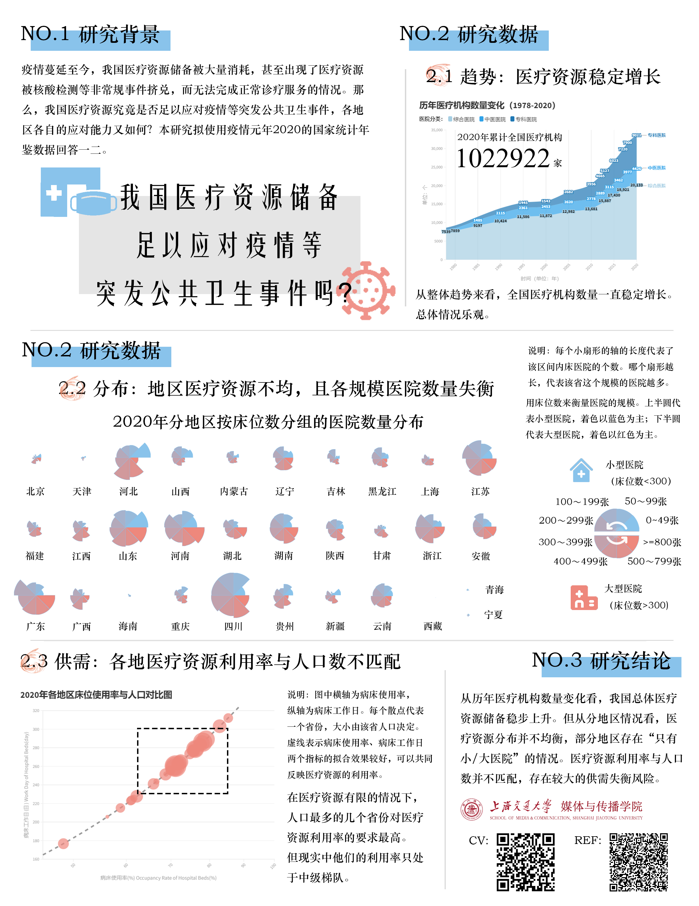

作品集整理（2023春）
您好，我是来自上海交通大学的研二学生王雨嫣。在这份作品集中您将会看到：
数据可视化：单个可视化图表（微观）
建模预测：使用机器学习进行的建模预测项目（中观）
分析报告：独立完成的整个分析报告（宏观）
希望尽可能向您展示我能力的演进路线 :)
1 数据可视化
我从单个图表的可视化开始学习如何进行数据分析，虽然这部分工作现在看来很简单，但我也在这个过程中不断积累、不断反思。
出于保密原则，使用虚拟数据替代原真实数据，部分指标名、年份也进行了模糊化处理。
1.1 地图+时间线
多数无代码的BI工具对地图和时间轴的支持不是很好，故而在上一份实习前期我负责了大量带地图的数据集的可视化（使用pyecharts制作），以下是其中之一。
<p>您的浏览器不支持 iframe 标签。</p>
说明：拖动时间轴可看到每个月详细情况。原数据已被替换为虚拟数据。
1.2 散点图
当需要分析的指标有三个（甚至更多）时，使用散点图最简单直接。这是上一段实习中最常用的图表之一，故择一展示。
<p>您的浏览器不支持 iframe 标签。</p>
说明：拖动上方时间轴可看到每个月详细情况。原数据已被替换为虚拟数据。
2 建模预测
优质地完成了大量描述性分析后，我开始接触机器学习，尝试建模预测工作。
已有项目：
1.
基于百度搜索指数估计放开初期新冠感染情况，并使用传染病模型预测短期疫情走势
2.
基于物流强度数据预测水泥行业营收
更多细节欢迎在面试中详细询问🥰
3 分析报告
正在参与撰写
水泥行业相关报告
，出于保密原则，无法在此展示，欢迎您在面试中询问更多细节。
放几个此前公开参赛作品/个人课程项目，向您展示针对某个主题完整进行分析的能力。
所有数据均来自公开数据源，数据爬取、清洗、可视化、分析的全过程均由本人独立完成。
3.1 精准扶贫（全国三等奖作品）
本作品获得第五届大学生网络编辑大赛全国三等奖。
作品地址：
https://wyycommu.github.io/data-journalism/index.html
3.2 医疗资源储备（Tableau&R）

联系方式
如果您觉得我适合或有潜力胜任工作，欢迎您联系我🥰
邮箱：wyycommu@sjtu.edu.cn